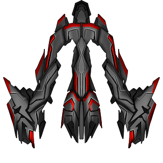
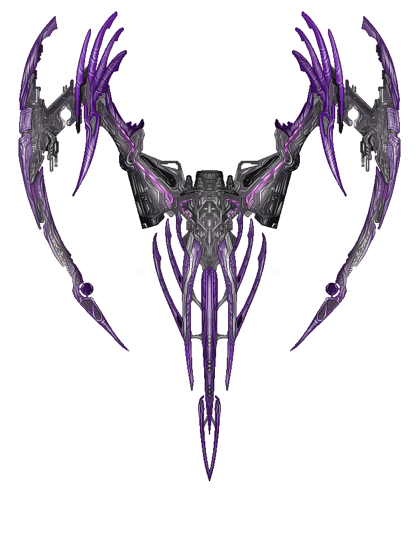
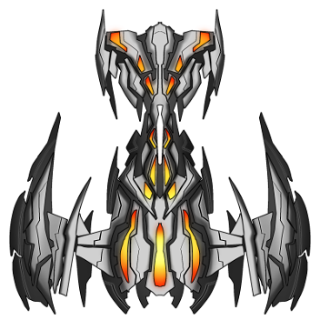
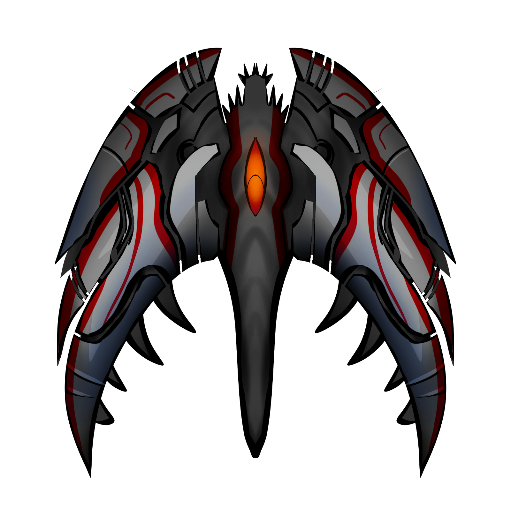
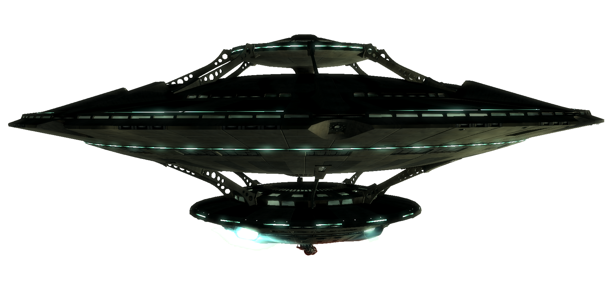

<div id="titre-content" class="container">
		<span>Galerie</span>
	</div>
<div class="container">
	<div class="row content-ajax" id="div-galerie">
		<table id="table-galerie">
			<tbody id="contenu-galerie">
				<!--<tr>
					<td class="ship"></td>
					<td class="description">
						<div class="titre">PRÒSKOPOS</div>
						<p>Ces vaisseaux sont les éclaireurs alien : ils voyagent en petit groupe à la recherche de leurs ennemis.</p>
						<p>Lorsque qu'ils en rencontrent un, certains attaquent alors que d'autres partent prévenir leurs supérieurs.</p>
						<p>Ces ennemis sont relativement faibles : ils sont simple à détruire, et leurs missiles sont lents et facile à éviter, mais
						leurs dégâts sont conséquent, attention à ne pas se laisser surprendre lorsque qu'ils sont accompagnés d'autres ennemis.</p>
					</td>
				</tr>
				<tr>
					<td class="ship"></td>
					<td class="description">
						<div class="titre">STÒLOS</div>
						<p>Ils constituent l'atout principal de la flotte alien.</p>
						<p>Construit en très grand nombre, ils vous paraîtront venir par vagues infinies.</p>
						<p>Ils ne se déplacent que très rarement seuls, mais leurs attaquent gagneront en intensité au fur et à mesure que vous détruirez
						les autres STÒLOS.</p>
						<p>De ce fait, bien que peu mobile, et ne faisant que peu de dégats, leur vitesse peu rapidement devenir très élevée.</p>
						<p>Attention donc à bien gérer vos priorités en présence de ces ennemis.</p>
					</td>
				</tr>
				<tr>
					<td class="ship"></td>
					<td class="description">
						<div class="titre">ALOGÀKI</div>
						<p>L'objectif de cet ennemi, est de vous détruire coûte que coûte.</p>
						<p>N'étant pas armé, leur seul moyen d'y parvenir est de vous rentrer dedans.</p>
						<p>Ils sont donc très rapide, causent des dégats importants, et ne vous lacheront qu'à leur déstruction, ou en se perdant dans
						l'espace.</p>
						<p>Ils sont aussi capable de changer de direction extremment rapidement afin de vous surprendre.</p>
						<p>Très faible individuellement car très fragile, ils arrivent toujours en grand nombre afin de palier à leur faiblesse.</p>
					</td>
				</tr>
				<tr>
					<td class="ship"></td>
					<td class="description">
						<div class="titre">DIMIOURGÒS</div>
						<p>Un vaisseau qui peu paraître pacifique car il ne vous attaquera jamais directement, mais il n'est pas à sous-estimer.</p>
						<p>Très peu mobile, mais très résistant, il contient un stock de pièce conséquent lui permettant de fabriquer des drones à la
						chaîne.</p>
						<p>Drones qu'il enverra en combat dès qu'un autre sera détruit.</p>
						<p>Il ne se déplace que très rarement en groupe car suffisemment puissant à lui seul.</p>
					</td>
				</tr>
				<tr>
					<td class="ship"></td>
					<td class="description">
						<div class="titre">KIFÌNAS</div>
						<p>Le drone fabriqué par le DIMIOURGÒS.</p>
						<p>Il fonctionne de manière complétement automatique.</p>
						<p>Son programme lui permet de suivre son ennemi sans relache et de lui tirer régulièrement dessus.</p>
						<p>Plutôt faible car peu résistant et ne causant que peu de dégats, sa taille et son remplacement continue peuvent rapidement
						devenir un problème.</p>
					</td>
				</tr>
				<tr>
					<td class="ship"></td>
					<td class="description">
						<div class="titre">EPIKEFALÌS</div>
						<p>Un des vaisseau mère de la flotte alien, il commande une partie des troupes et coordonne les attaques.</p>
						<p>Extremment puissant, extremment résistant, mais peu mobile.</p>
						<p>Il sera très souvent accompagné d'autres vaisseaux pour augmenter sa force de frappe.</p>
						<p>Une de ses attaques permet de couvrir la zone de combat de projectiles limitant ainsi grandement les déplacements.</p>
						<p>Son autre attaque est une rafale de tirs très puissante.</p>
						<p>Il peut aussi combiner ses 2 attaques pour augmenter ses chances de vous toucher et de vous détruire.</p>
					</td>
				</tr>-->
			</tbody>
		</table>
	</div>
</div>


<script src="../assets/scripts/menu-selector.js"></script>